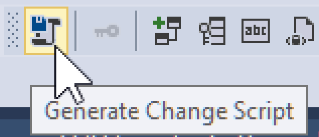

Generate Change Script
I can never find this icon since it changed appearance...
Here's the "Generate Change Script" on the "Table Designer" toolstrip of "Microsoft Sql Server Management Studio v17.8.1"

You can also get to this function from the "Table Designer" menu, last option.